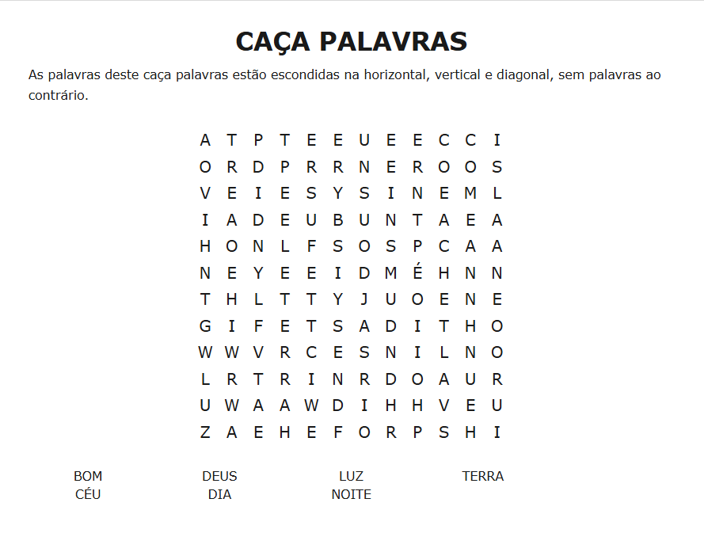
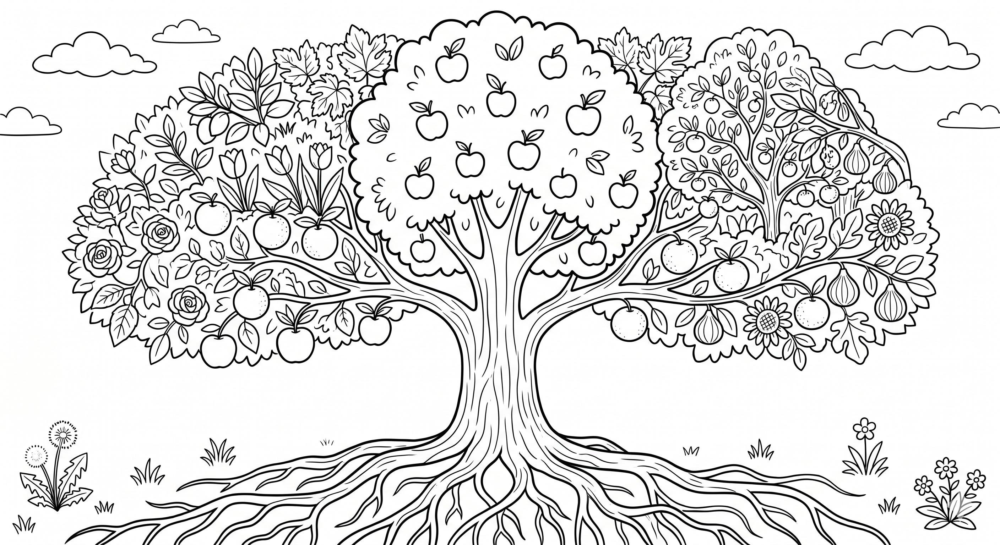
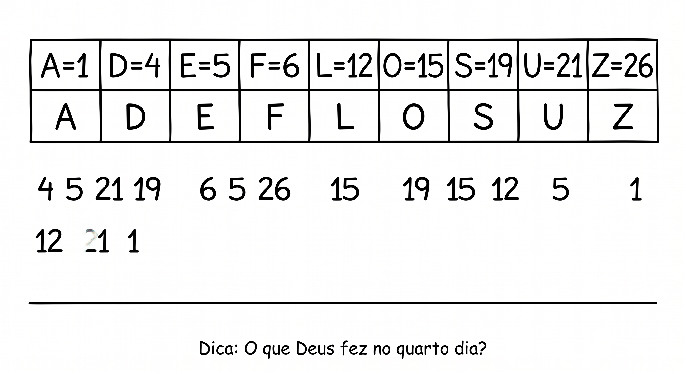
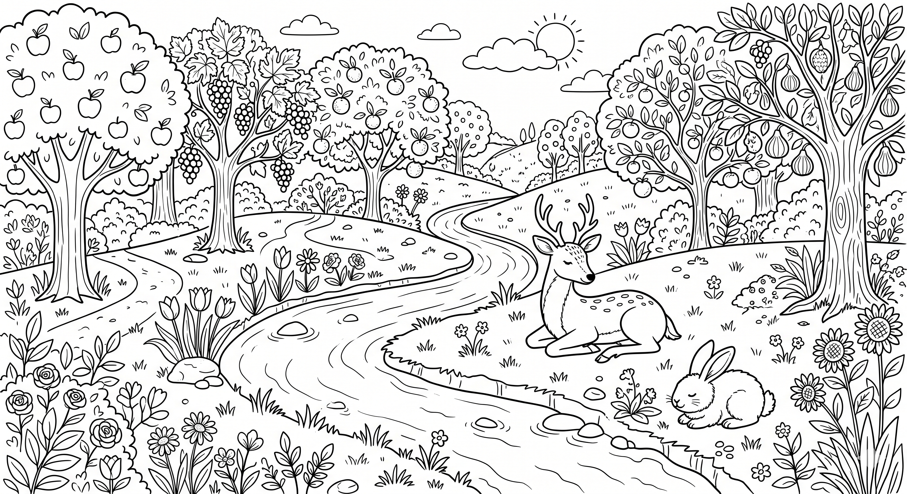
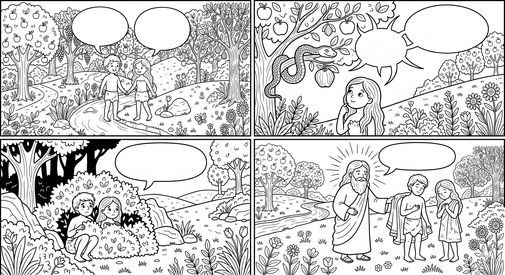

Semana 1 – A Criação e o Jardim
Deus olhou para a escuridão e, com Sua palavra, criou a luz. Ele separou a luz das trevas e chamou a luz de "dia" e as trevas de "noite". Isso nos ensina que Deus está no controle até das coisas mais simples, e que Ele sempre traz luz para nossas vidas.
Encontre as palavras escondidas e marque-as na lista.

No segundo dia, Deus criou o céu e separou as águas. Ele colocou ordem no mundo, mostrando que cada coisa tem seu lugar. Assim como a água encontrou seu caminho, nós também podemos confiar que Deus guia nossos passos.
Desenhe uma gota de chuva saindo das nuvens e chegando ao mar. No meio do caminho, escreva ou desenhe algo que Deus colocou em ordem na sua vida (exemplo: a família, os estudos, a natureza).
Pergunta para reflexão: "Por que é bom que exista separação entre as coisas (dia/noite, céu/terra)?"
Deus encheu a terra de plantas, flores e árvores. Cada folha, cada fruto, é um presente dEle. A natureza nos ensina sobre o cuidado e a beleza do Criador, e nos convida a cuidar bem do mundo.
Pinte a árvore abaixo com suas cores favoritas. Depois escreva o nome dela e por que você gosta dela.

No quarto dia, Deus criou o sol, a lua e as estrelas. Eles iluminam a terra e marcam as estações e os dias. Cada pôr do sol e cada noite estrelada nos lembram que Deus é fiel e está sempre conosco.
Use o código para descobrir a mensagem secreta.

Semana 1 – A Criação e o Jardim
Deus nos criou com Suas próprias mãos e nos deu vida. Somos especiais porque temos a imagem de Deus. Nosso corpo é uma obra-prima, e cada parte dele merece respeito e cuidado.
Faça um autorretrato bem caprichado! Inclua detalhes como seu cabelo, seus olhos, e até sua expressão favorita. Depois escreva embaixo: "Eu sou especial para Deus!".
Deus preparou um jardim perfeito para Adão e Eva viverem. Era um lugar de paz, beleza e comunhão com Ele. Ainda hoje, Deus deseja estar perto de nós e nos abençoar com um relacionamento de amor.
Pinte e complete o jardim do Éden abaixo. Adicione mais flores, animais e escreva como você se sentiria lá.

Mesmo depois que Adão e Eva desobedeceram, Deus não os abandonou. Ele cuidou deles, vestiu-os e prometeu um Salvador. Isso nos mostra que o amor de Deus é maior que nossos erros. Ele sempre nos perdoa e nos protege.
Escreva o que Adão e Eva estão dizendo nos balões. Depois pinte as cenas.
